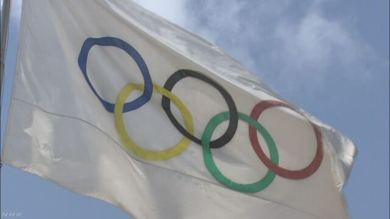

東京五輪 マラソン・競歩「札幌での実施を検討」ＩＯＣ発表
 東京オリンピックのマラソンと競歩について、ＩＯＣ＝国際オリンピック委員会は16日、猛暑の対策として会場を札幌に移すことを検討していると発表しました。
来年の東京オリンピックでは、猛暑の対策が大きな課題でなかでも屋外で長時間、競技が続くマラソンと競歩は大会の組織委員会が開始時間を招致段階の計画から前倒しするなど、さまざまな対策を検討してきました。
これについてＩＯＣは、16日、マラソンと競歩の会場を札幌に移すことを検討していると発表しました。
理由として、オリンピック期間中の気温が札幌では東京に比べて５度から６度低いことをあげています。また、今月30日から東京で行われる大会組織委員会と準備状況などを確認する調整委員会で、東京都や国際陸上競技連盟などと具体的な話し合いをすることを明らかにしました
マラソンと競歩は、今月まで中東カタールのドーハで開かれた世界選手権で、気温が40度を超える日中を避けスタートを午後11時半すぎに設定して行われましたが、女子マラソンでは68人のうち完走したのは40人で、４割を超える選手が途中棄権となるなど、猛暑の中で競技が行われることに選手や関係者から不安の声が上がっていました。
ＩＯＣ＝国際オリンピック委員会のトーマス・バッハ会長は「会場を札幌に移すという今回の大幅な変更の提案は、われわれが暑さに関して深刻な懸念を示していることを表している。オリンピックは、選手たちの一生に一度のパフォーマンスを出す舞台であり、今回の提案は、選手が最高の結果を出せることを可能にする。実行されることを楽しみにしている」とコメントしています。